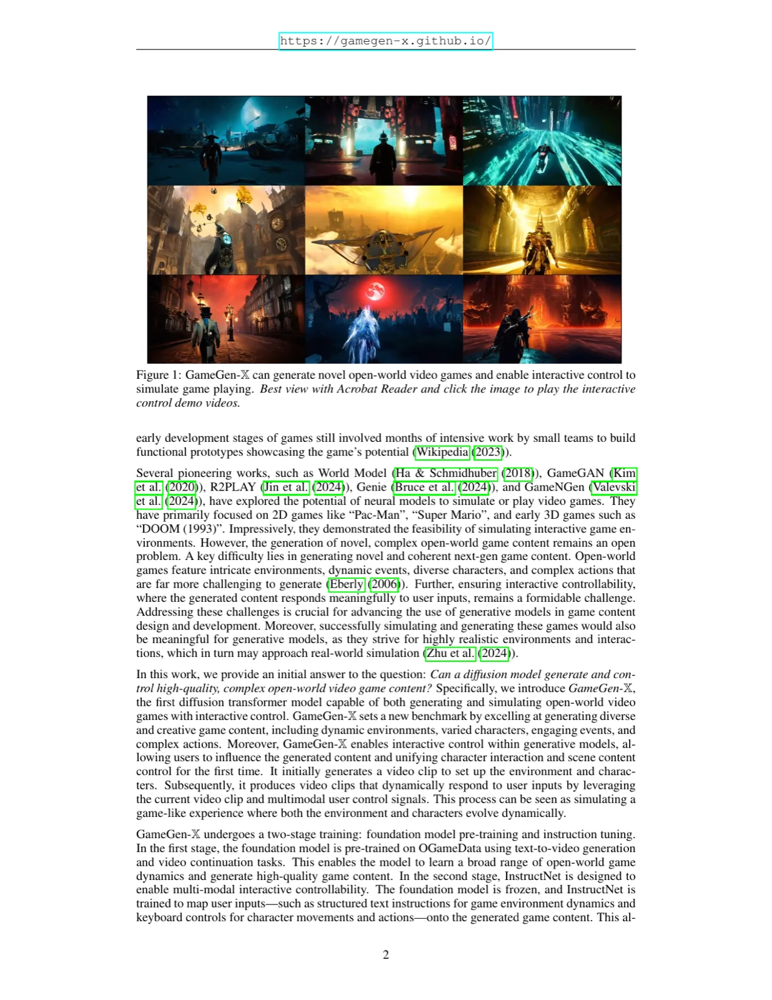
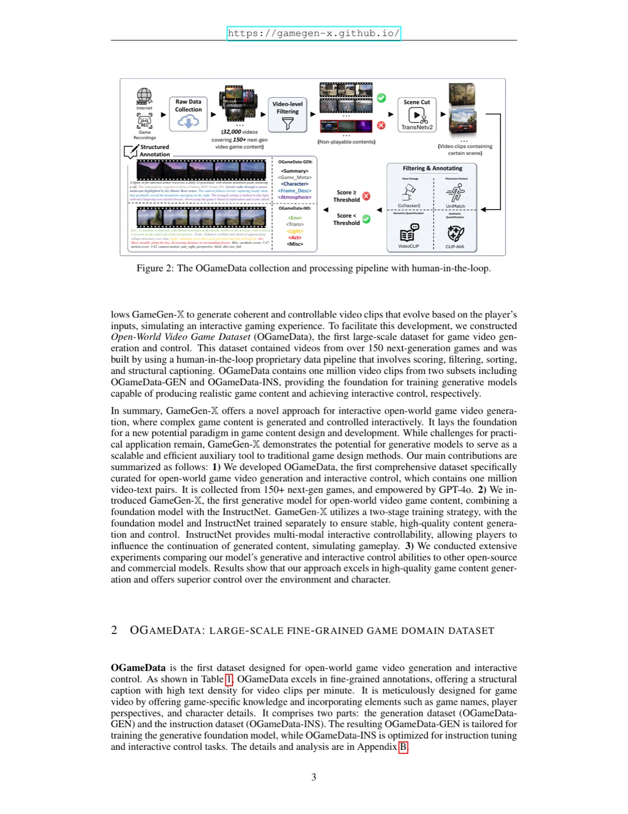
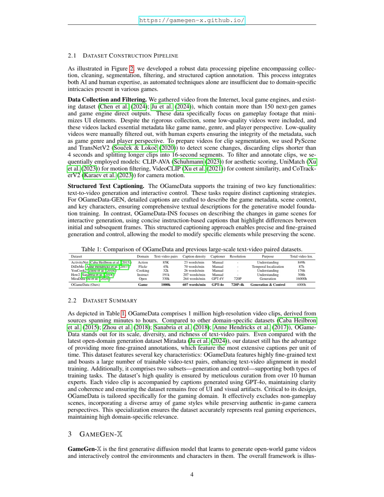
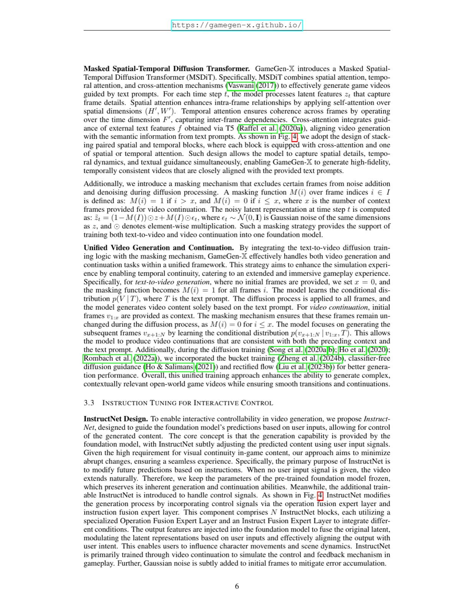
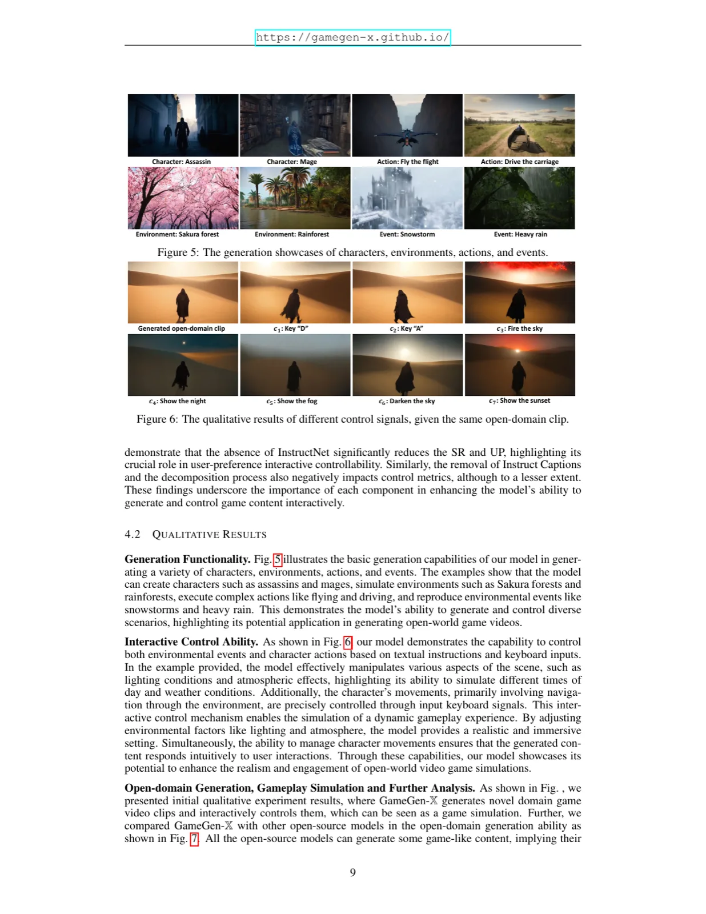
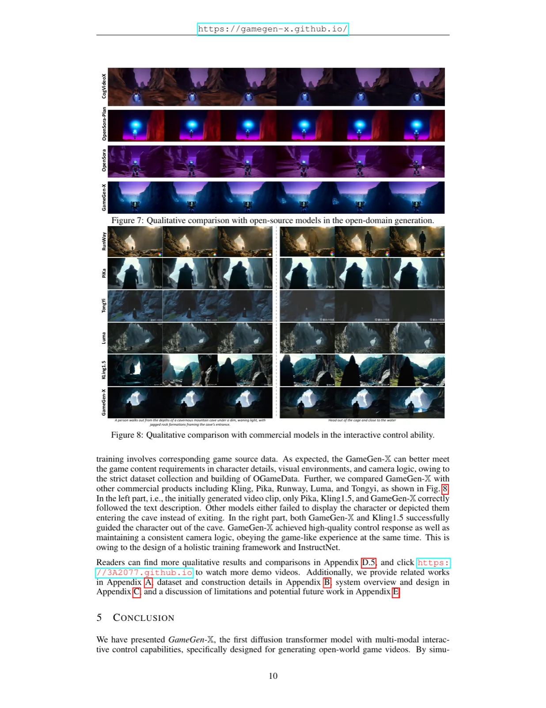

GameGen-X 是首个专为开放世界游戏视频生成与交互控制设计的 Diffusion Transformer 模型。它通过两阶段训练——基础模型预训练与 InstructNet 指令微调——既能从文本描述中生成新颖游戏场景，又能响应键盘信号和结构化文本指令实时调整游戏内容，首次将角色交互控制与场景内容控制统一到一个视频生成框架中。
开放世界游戏开发耗费大量人力与时间：即便是早期原型，也需要小型团队数月的密集工作。现有神经网络方法（如 GameGAN、Genie、GameNGen）主要针对 2D 简单游戏（Pac-Man、DOOM），在复杂的次世代开放世界游戏内容生成上面临本质挑战——不仅要生成动态环境与多样角色，还要支持用户实时交互控制。
"Can a diffusion model generate and control high-quality, complex open-world video game content?"

GameGen-X 采用两阶段训练策略：第一阶段在 OGameData-GEN 上预训练基础模型，学习游戏视频的文本-视频生成与视频续写；第二阶段引入 InstructNet，在基础模型参数冻结的前提下，通过 OGameData-INS 进行指令微调，赋予模型多模态交互控制能力。

OGameData 是首个专为开放世界游戏视频生成与控制构建的大规模数据集，包含 100 万高分辨率（720p–4K）视频-文本对，来自 150+ 次世代游戏，总时长约 4000 小时，标注密度达 607 words/min——是对比数据集 MiraData（264 words/min）的 2.3 倍。数据集由两个子集组成：OGameData-GEN（用于生成预训练）和 OGameData-INS（用于指令微调与交互控制）。

基础模型使用 3D Spatio-Temporal VAE 将视频片段压缩至潜在表示，再由 MSDiT 进行去噪生成。MSDiT 叠加 Spatial Attention（帧内关系）、Temporal Attention（帧间相干性）和 Cross-Attention（与 T5 文本嵌入对齐）三种机制。为统一文本到视频生成与视频续写，引入 掩码机制（Masking Mechanism）：对文本到视频任务，所有帧均加噪（x=0）；对视频续写任务，前 x 帧作为上下文保持不变，仅对后续帧去噪。训练还结合了 bucket training、classifier-free guidance 和 rectified flow。

InstructNet 通过多模态专家（Multi-modal Experts）处理三类控制信号：
交互控制通过自回归生成实现：基于历史帧 v₁:ₓ，在控制信号 c 的条件下自回归预测后续帧 vₓ₊₁:N，形成类游戏的连续交互体验。
在自建游戏视频测试集上与 Mira、OpenSora-Plan 1.2、CogVideoX-5B、OpenSora 1.2 等开源模型对比，评估生成质量（FID、FVD、TVA、UP、MS、DD、SC、IQ）和交互控制能力（SR-C：角色动作成功率；SR-E：环境事件成功率）。
| 模型 | 分辨率 | 帧数 | FID↓ | FVD↓ | TVA↑ | UP↑ | MS↑ | SC↑ |
|---|---|---|---|---|---|---|---|---|
| Mira | 480p | 60 | 360.9 | 2254.2 | 0.27 | 0.25 | 0.98 | 0.94 |
| OpenSora-Plan 1.2 | 720p | 102 | 407.0 | 1940.9 | 0.38 | 0.43 | 0.99 | 0.92 |
| CogVideoX-5B | 480p | 49 | 316.9 | 1310.2 | 0.49 | 0.37 | 0.99 | 0.92 |
| OpenSora 1.2 | 720p | 102 | 318.1 | 1016.3 | 0.50 | 0.37 | 0.98 | 0.87 |
| GameGen-X（Ours） | 720p | 102 | 252.1 | 759.8 | 0.87 | 0.82 | 0.99 | 0.94 |
| 模型 | SR-C↑ | SR-E↑ | UP↑ | MS↑ | SC↑ |
|---|---|---|---|---|---|
| OpenSora-Plan 1.2 | 26.6% | 31.7% | 0.46 | 0.99 | 0.90 |
| CogVideoX-5B | 23.0% | 30.3% | 0.45 | 0.98 | 0.85 |
| OpenSora 1.2 | 21.6% | 14.2% | 0.17 | 0.99 | 0.84 |
| GameGen-X（Ours） | 63.0% | 56.8% | 0.71 | 0.99 | 0.88 |
GameGen-X 在角色动作成功率（SR-C：63.0% vs. 次优 26.6%）和环境事件成功率（SR-E：56.8% vs. 次优 31.7%）上大幅领先，同时 FID（252.1）和 FVD（759.8）显著优于所有对比模型。IQ 指标上稍弱，论文指出这是因为 IQ 倾向于偏好在自然场景数据集上训练的模型。


数据策略消融（Table 4）：使用 GameGen-X 完整数据策略（FID 252.1 / FVD 759.8 / TVA 0.87 / UP 0.82）显著优于使用 MiraData（303.7 / 1423.6 / 0.70 / 0.48）、短标注（303.8 / 1167.7 / 0.53 / 0.49）或渐进训练（294.2 / 1169.8 / 0.68 / 0.53）的变体。
InstructNet 组件消融（Table 5）：移除 InstructNet 使 SR-C 从 45.6% 降至 12.3%、SR-E 从 45.0% 降至 17.5%，用户偏好 UP 从 0.50 降至 0.16，证明 InstructNet 是实现用户偏好交互控制的核心组件。移除 Instruct Captions 或 Decomposition 也显著影响控制指标。
扩散模型的采样过程和空间-时间自注意力机制计算代价高昂，目前无法实现游戏所需的实时交互响应。
自回归生成中错误会累积，导致长序列中的角色外观和场景连贯性下降，重新进入已生成场景时尤为明显。
模型难以独立生成快速、复杂的动作（如战斗序列），需要借助视频 prompt（Canny 边缘、运动向量等）辅助引导，限制了模型的自主生成能力。
受内存与计算约束，GameGen-X 尚不支持超高分辨率内容生成（如 2K/4K），限制了其在 AAA 级次世代游戏开发中的实际应用。
模型短期记忆窗口仅为 1–108 帧，当玩家返回已生成场景时，场景可能发生显著改变，无法维持长时间的环境连贯性。
生成内容在光照反射、角色-环境交互的物理准确性方面仍有不足；当前训练数据分布也限制了多角色协同交互场景的生成质量。
模型输出的视频目前无法直接兼容现有游戏引擎，需要额外的转换步骤（如视频转 3D 模型）才能融入游戏开发工作流。